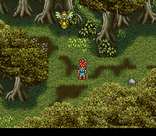
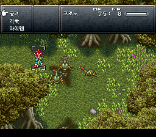
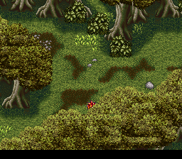
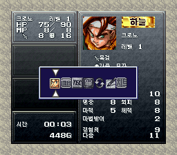
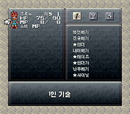
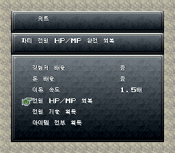

게임 소개
CT+는 북미판을 바탕으로 1999년 시대 탐험, 2300년의 새 던전, 질 왕국의 다른 섬들, 삭제됐던 적·대사·음악 복원, MSU-1 음악 지원, 더 자유로운 진행 순서 등을 더한 개조판입니다(CT+ 설명서 기준). 이 패치는 그 위에 한글화와 편의용 치트 메뉴를 얹었습니다.
- 원작
- 크로노 트리거 (スクウェア, 슈퍼패미컴)
- 발매
- 1995년 3월 11일 (일본)
- 장르
- RPG
- 바탕
- Chrono Trigger+ Final.2.1 (팬 제작 개조판, 북미판 기반)
한글화 범위
- 게임 대사 전체 (12픽셀 글꼴, 갈무리11 Bold 기반)
- 메뉴 전체: 상태·아이템·기술·설정·순서 교체·저장/불러오기·상점·장비 (8픽셀 글꼴, 갈무리7 기반)
- 아이템·기술·몬스터 이름, 아이템·기술 설명, 지명, 시대 이름, 장 제목
- 전투: 명령(공격/기술/아이템/연계), 기술·아이템 목록, 적 이름, 2인·3인 기술, 전투 메시지
- 이름 입력 화면 (한글 128음절 표, 기본 이름 크로노/마르/루카/로보/카에루/에이라/마왕/실버드)
- CT+ 속성 배지(하늘/물/불/그림자), 전투 모드 선택(액티브/웨이트)
용어는 일본판에서 온 그리핀 패치 계열을 따랐습니다(그랜드리온, 실버드, 마왕, 보슈/하슈/가슈 등).
타이틀 로고, 엔딩 스태프롤, 「HP/MP」 같은 그림 글자는 원판 그대로입니다. 대사 속 조사는 바뀌는 단어 뒤에서 「을(를)」처럼 표시됩니다.
치트 메뉴
X 버튼 메뉴의 아이콘 줄 맨 오른쪽(7번째)에 「치트」 아이콘이 있습니다. A로 들어가 위아래로 고르고 A로 실행, B로 돌아갑니다. 배율 설정은 SRAM의 따로 된 자리에 저장되어 모든 세이브 슬롯에 공통으로 적용됩니다.
| 경험치 배율 | 끔 → 2배 → 4배 → 5배. 기술 포인트도 같은 배율로 오릅니다. |
|---|---|
| 돈 배율 | 끔 → 2배 → 4배 → 5배 |
| 이동 속도 | 끔 ↔ 1.5배 (필드에서 걷기·달리기 모두) |
| 전원 HP/MP 회복 | 동료 8명 전원 최대로 |
| 전원 기술 획득 | 동료 7명의 1인 기술 전부 + 2인·3인 기술 (되돌릴 수 없으니 세이브를 나눠 두세요) |
| 아이템 전부 획득 | 무기·방어구·장신구·소모품 194종을 99개씩 (이야기 진행용 물건 제외) |
화면






적용 방법
CT+ 롬 준비
북미판 「Chrono Trigger (U) [!]」(헤더 없음, 4MB, CRC32
2D206BF7)에 CT+ Final.2.1 패치를 먼저 적용합니다. 결과는 6MB, CRC3260D01C3A입니다. 512바이트 헤더가 붙은 롬이면 헤더를 떼어 주세요.한글 패치 받기
아래 버튼으로 한글 IPS(v1.7)를 받습니다.
패치 적용
RomPatcher.js(웹)나 Floating IPS(PC)로 CT+ 롬에 적용합니다. 결과 롬 CRC32는
386F1EAC입니다.실행
Snes9x 같은 최신 에뮬레이터에서 실행합니다. 새 게임으로 시작하는 것을 권장합니다(영문판 세이브는 이름이 영문으로 남습니다).
이 IPS는 CT+를 먼저 적용한 롬용입니다. CT+ 자체는 원작자의 배포처에서 받아 주세요.
알려진 문제
- 게임을 어느 정도 진행한 뒤 전투에서 크로노의 기술 목록이 비어 보이는 현상 — 확인 중
- 배를 타고 이동할 때 「집으로 돌아오기」를 고르면 화면이 깨지는 현상 — 확인 중
- v1.5 이전 판으로 만든 에뮬레이터 상태 저장(.frz 등)은 망가진 값이 남아 있을 수 있습니다. 게임 안 세이브로 불러오세요.
바뀐 점
- 치트: 경험치 배율이 기술 포인트에도 적용
- 치트: 이동 속도 1.5배 추가
- 전투를 두 번 하면 캐릭터가 멈추던 문제 수정 (한글 전투 글꼴 작업 메모리가 이벤트 엔진 영역과 겹치던 문제)
- 전투 뒤 기술 습득 검사 보강
- 치트 「전원 기술 획득」 뒤 다른 캐릭터 기술을 익히고 멈추던 문제 수정
- 치트 메뉴 추가
- 전투 메시지에서 캐릭터 이름이 빈칸으로 나오던 문제 수정
게임 안 한글 글꼴: 갈무리(Galmuri) — SIL Open Font License.